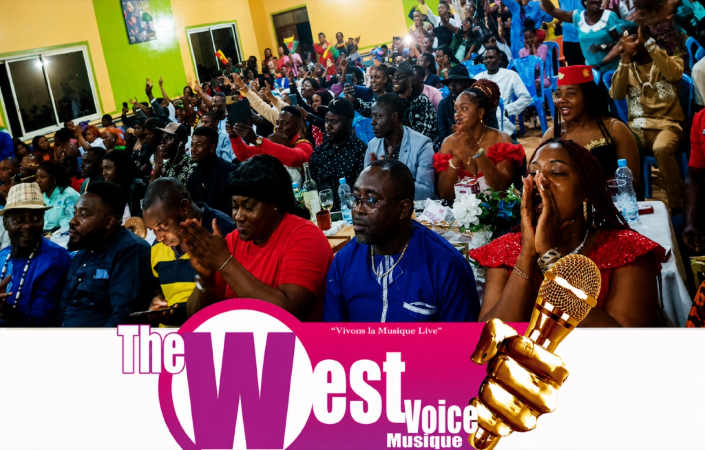

Radio Audace 106.8 FM — le direct et l'actualité du Cameroun

SOCADEL : 100 jours après son installation, la nouvelle direction passe l'examen
Réunie à Douala sous la présidence du ministre de l'Eau et de l'Énergie, Gaston Eloundou Essomba, la nouvelle équipe dirigeante de la Société camerounaise d'électricité a été soumise à une évaluation de sa feuille de route.
Nos décryptages
Les sujets que la rédaction prend le temps d'expliquer.
Écrans, pornographie et intelligence artificielle : sommes-nous en train de perdre le goût des relations humaines ?
Jamais nous n'avons disposé d'autant de moyens pour communiquer. Pourtant, il est possible de passer plusieurs heures par jour à échanger sur son téléphone tout en éprouvant un profond sentiment de solitude.

CEMAC : plus de 10 500 milliards de FCFA de dette sur le marché régional, qu'est-ce que cela signifie ?

MRC vs MINAT : le bras de fer administratif qui fragilise l'opposition avant les élections
À Douala, la SCDP renforce ses capacités de stockage et sa logistique pétrolière

The West Voice Music : quand la jeunesse fait entendre sa voix

Incendie dévastateur au marché Foumi à New Bell : un bilan humain et matériel lourd
Les émissions
Chaque rendez-vous de l'antenne, son horaire et ses derniers épisodes.

Le Train d'Audace
La matinale d'information : rubriques, invités et la parole aux auditeurs.
Audace Info Midi Magazine
Politique, économie, culture, santé et sports, avec la parole aux experts.

Le Club Audace
La tribune qui décortique l'actualité sportive, scoops et analyses.

Parlons Droit !
Droit pénal, civil, matrimonial : des acteurs reconnus répondent à vos questions.

Santé Magazine
Santé et bien-être, avec les spécialistes qui répondent aux préoccupations.

Femmes d'Audace
Une tribune de promotion des compétences et du leadership au féminin.

Bold Génération
La vitrine du savoir-faire jeune et du patrimoine culturel camerounais.
Bien plus que l'info. Le direct, les émissions et l'actualité du Cameroun, à Douala et partout en ligne.